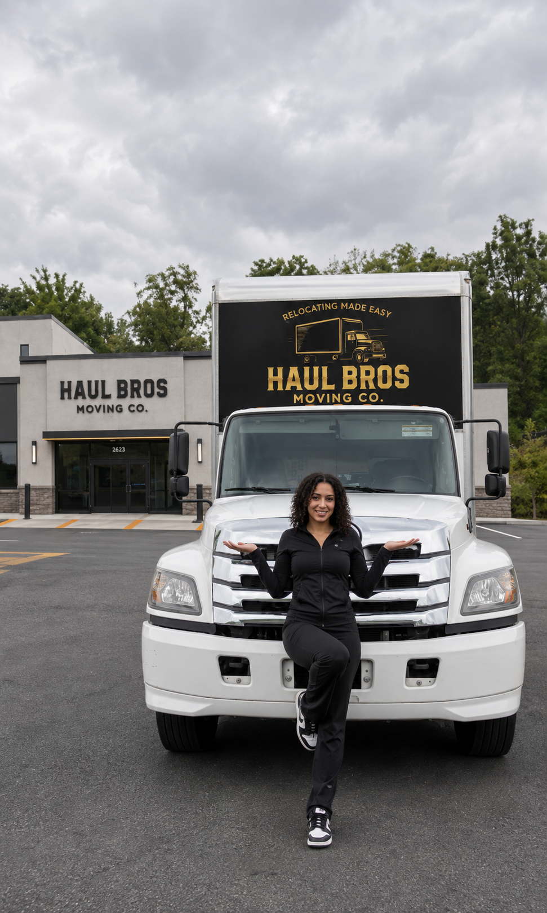

Moving to Great Falls, VA: Your Complete Local Guide
Moving to Great Falls, VA? Learn about local roads, Riverbend Park, Great Falls Park, property access, moving plans, and Haul Bros Moving Co LLC.

Moving to Great Falls, Virginia? This Fairfax County community is known for spacious residential properties, a village center along Georgetown Pike, and access to the Potomac River, Riverbend Park, and Great Falls Park. Haul Bros Moving Co LLC is a Woodbridge-based full-service moving company serving Great Falls and Northern Virginia communities on routes the company is authorized to serve. This guide covers the area, transportation, moving-day logistics, and the details to share when requesting a moving estimate.
In this guide
- Getting to know Great Falls
- Great Falls neighborhoods and nearby communities
- Getting around Great Falls
- Parks, shopping, and local destinations
- Moving to Great Falls: a practical checklist
- How Haul Bros Moving Co LLC can help
- Great Falls moving FAQs
Getting to Know Great Falls, VA
Great Falls is an unincorporated community in Fairfax County, Virginia, in the Washington, D.C. metropolitan area. It is part of Fairfax County’s Dranesville District, along with McLean, Herndon, and parts of Vienna and Falls Church.
Great Falls has a more residential, low-density character than many inner Northern Virginia communities. The area includes large-lot homes, private roads, subdivisions, and properties set back from the road. Residents use local centers along Georgetown Pike for everyday services, while larger shopping and employment hubs are in nearby McLean, Tysons, Reston, and Sterling.
One detail that can confuse newcomers: Great Falls Park is a National Park Service site with a McLean, Virginia mailing address, while Riverbend Park is a Fairfax County Park Authority property in Great Falls. Both are near the Potomac River, but they are separate parks managed by different agencies.
When comparing homes, check the exact address, commute, school assignment, utilities, and road access. Great Falls has no Metrorail station within the community, so many trips rely on a car or connections to transit in nearby areas.
Great Falls Neighborhoods and Nearby Communities
Great Falls is made up of residential neighborhoods and subdivisions rather than an incorporated town government. Community names and informal boundaries vary. Depending on the address, residents may refer to areas around:
- Great Falls Village Centre and Georgetown Pike: A local center with shops, restaurants, services, the library, and community destinations.
- Riverbend Road and Potomac Hills: Residential areas near Riverbend Park and the Potomac waterfront.
- Walker Road and Beach Mill Road: Residential corridors connecting homes, schools, and local roads.
- Georgetown Pike and Old Dominion Drive: Key local routes, with access toward McLean, Great Falls Park, and the village center.
- Nearby McLean and Tysons: Larger employment, shopping, and transit centers south and southeast of Great Falls.
- Nearby Reston and Sterling: Regional destinations to the west and northwest.
This is a general guide, not a property boundary map. Fairfax County’s address and GIS tools can identify the district, schools, nearby services, and parks for a specific address.
Serving Great Falls from Woodbridge
Haul Bros Moving Co LLC is based in Woodbridge and serves Great Falls and surrounding Northern Virginia communities, subject to route authorization, availability, and the written service agreement. Because Great Falls addresses can involve long driveways, private roads, gates, and limited truck turnaround space, share your complete addresses and access details when requesting an estimate.
Getting Around Great Falls
Roads and driving
Georgetown Pike, Route 7 (Leesburg Pike), Old Dominion Drive, Walker Road, Beach Mill Road, and River Bend Road are important routes in and around Great Falls. I-495 provides a connection to the Beltway and nearby regional destinations. Road conditions, school traffic, construction, and peak commuting hours can affect travel times.
Many Great Falls roads are narrower and more winding than major suburban arterials. Some homes have steep or long driveways, gates, low branches, limited turnaround space, or gravel approaches. These details matter when selecting a moving truck and planning where it can safely park. Send photos or a short video of the entrance and driveway if access is unusual.
Public transportation
Great Falls does not have a Metrorail station within the community. Residents typically drive or use local bus connections to reach nearby Metro stations and regional transit. Check current Fairfax Connector and Metrobus routes, service hours, and stop locations directly with Fairfax County and WMATA; schedules can change.
For a commute, calculate the full trip from the specific address, including driving or walking to a stop, parking, transfers, and the final leg. A nearby transit station on the map may still require a drive from a particular neighborhood.
Moving-truck access
A regular visitor parking space or curbside location may not be suitable for a 26-foot moving truck. Confirm where a truck can legally and safely park and whether it can turn around without blocking traffic or neighboring driveways. Tell your mover about HOA rules, private-road restrictions, gates, and any property-specific access instructions before moving day.
Parks, Shopping, and Local Destinations
Riverbend Park
Riverbend Park is a Fairfax County park along a bend in the Potomac River. It offers natural areas, trails, a visitor center, and access to river recreation. Trail connections link the park with other regional parkland and National Park Service trails. Check current park hours and notices before visiting.
Great Falls Park
Great Falls Park is managed by the National Park Service. The Virginia entrance is at 9200 Old Dominion Drive, McLean, VA 22102. The park features overlooks of the Potomac River falls, hiking trails, and exhibits about the Patowmack Canal and local history. Check current hours, conditions, entrance fees, and visitor alerts before going; busy weekends can bring entrance delays.
Great Falls Village Centre
The village center along Georgetown Pike is a local hub for restaurants, shops, services, and community activities. Great Falls Library and The Grange are also local landmarks. The county has pedestrian and trail improvement projects around Georgetown Pike, so check current traffic and construction information if you are visiting or moving near the center.
Nearby shopping and services
For a broader selection of shopping, dining, healthcare, and employment destinations, residents often travel to McLean, Tysons, Reston, and Sterling. Consider the drive time to those centers as part of your home search, especially during weekday commute periods.
Moving to Great Falls: A Practical Checklist
1. Confirm the address and property access
Provide the complete pickup and delivery addresses, ZIP codes, gate codes, and any private-road instructions. Confirm whether the property is part of an HOA or managed community and ask about moving-truck rules.
2. Describe the driveway and truck approach
Great Falls homes may have long driveways, slopes, narrow entrances, tree canopies, gates, gravel, or tight turns. Tell your mover what the truck will encounter and where it may be able to park. Photos of the road entrance and driveway are useful for planning.
3. Share a detailed inventory
List furniture, appliances, boxes, garage and outdoor items, and storage contents. Mention oversized or heavy pieces such as safes, pianos, treadmills, large sectionals, oversized mirrors, and equipment. An accurate inventory helps determine the crew and truck needed.
4. Plan for stairs and long carries
Tell your mover about steps from the driveway to the front entrance, interior staircases, basement access, detached garages, and distances between the truck and the home. For homes with multiple levels or long walks, this can affect the estimated time.
5. Check HOA and contractor requirements
Ask whether the HOA or property manager requires advance approval, specific move hours, proof of insurance, or restrictions on commercial vehicles. Share documents and deadlines with your moving company before the scheduled date.
6. Coordinate traffic, keys, and timing
Plan key handoff and access at both homes, and allow time for the crew to travel between addresses. Check current conditions on Georgetown Pike, Route 7, I-495, and local roads. Construction and traffic can affect arrival and travel times.
7. Keep essential items with you
Carry medications, identification, keys, valuables, chargers, important papers, and first-night supplies separately. Do not place these items on the moving truck.
8. Request a written estimate
Ask for the crew size, truck, pricing structure, how additional time is billed, included equipment, add-on services, deposit terms, and conditions that could change the total. Provide the same inventory and access information to every company you compare.
How Haul Bros Moving Co LLC Can Help
Haul Bros Moving Co LLC is a Woodbridge-based full-service moving company serving Great Falls and surrounding Northern Virginia communities on routes the company is authorized to serve. We help with residential and commercial moves from apartments, townhomes, single-family homes, offices, and storage units.
Depending on the move and the written estimate, services may include:
- A moving crew and truck
- Loading, transportation, and unloading
- Labor-only loading or unloading assistance for qualifying moves
- Packing and unpacking support
- Furniture disassembly and reassembly as agreed
- Moving blankets, shrink wrap, dollies, and floor protection for qualifying moves
- Help coordinating a move that includes a storage unit
Published local moving packages
See our published local starting packages:
| Crew and truck | First 2 hours | Each additional hour |
|---|---|---|
| 2 movers + 26-foot truck | $395 | $159 |
| 3 movers + 26-foot truck | $495 | $189 |
| 4 movers + 26-foot truck | $695 | $249 |
The appropriate crew depends on inventory, property access, and requested services—not bedroom count alone. Request a current written estimate for your specific addresses and move details. Confirm packing, materials, specialty-item handling, and route-specific terms in that estimate.
To request an estimate, share your move date, pickup and delivery addresses, inventory or photos, stairs, driveway and parking details, and any packing needs.
Contact Haul Bros Moving Co LLC:
Call or text: 571-899-1919
USDOT: 4497497
Haul Bros Moving Co LLC — Relocating made easy.
Frequently Asked Questions About Moving to Great Falls, VA
Is Great Falls, VA a good place to live?
Whether Great Falls fits you depends on your budget, commute, housing preferences, and lifestyle. It offers a residential setting, local services along Georgetown Pike, and access to parks and the Potomac River. Visit the specific neighborhood and check commute, school, utility, and property-access details for the address you are considering.
Is Great Falls, Virginia part of Fairfax County?
Yes. Great Falls is an unincorporated community in Fairfax County and is included in the county’s Dranesville District. Check the exact address with Fairfax County to confirm local services and school assignments.
Is Great Falls Park in Great Falls, VA?
Great Falls Park is near the Great Falls community, but the National Park Service’s Virginia entrance has a McLean mailing address: 9200 Old Dominion Drive, McLean, VA 22102. Riverbend Park is a separate Fairfax County park located in Great Falls.
Does Great Falls have a Metro station?
There is no Metrorail station within Great Falls. Residents generally drive or take a local connection to Metro stations and regional transit in nearby areas. Check current Fairfax Connector and WMATA service for your specific address.
How much do movers cost in Great Falls, VA?
Moving costs depend on crew size, time, inventory, driveway and building access, and requested services. Haul Bros’ published local packages start at $395 for the first two hours with two movers and a 26-foot truck, followed by $159 per additional hour. Request a current written estimate for your move.
Does Haul Bros Moving Co LLC serve Great Falls?
Haul Bros serves Great Falls and surrounding Northern Virginia communities, subject to route authorization, availability, and the written service agreement. Contact us with both addresses and your preferred date to confirm service.
What should I tell movers about a Great Falls property?
Describe the driveway length and slope, gate, road width, low branches, gravel, turnaround space, stairs, long carries, parking restrictions, and HOA rules. Photos or a video walkthrough can help the moving company plan truck access.
Can a 26-foot moving truck access every Great Falls home?
No. Truck access depends on the road, driveway, gates, overhead clearance, turning space, and local restrictions. Share photos and measurements with your mover in advance so the company can assess the route and parking plan.
How far ahead should I book movers in Great Falls?
Contact a mover once your date is reasonably firm. Weekends, month-end dates, summer moves, and HOAs or properties requiring advance approval can take more coordination. If your date is close, ask Haul Bros about current availability.
Does Haul Bros offer packing services in Great Falls?
Packing support may be available depending on the move and requested scope. Tell Haul Bros whether you need full packing, selected-room packing, or help with fragile items. Confirm labor and material pricing in your written estimate.
Can I hire movers just to load or unload a rental truck?
Haul Bros offers labor-only assistance for qualifying moves. Tell us whether you need loading, unloading, or both; the truck or container size; your inventory; and the access conditions so we can confirm availability and provide an estimate.
What should I do the day before the movers arrive?
Finish packing what you plan to pack yourself, label boxes by room, set aside valuables and essentials, confirm truck access and parking, provide gate instructions, and clear the driveway or loading area if permitted. Confirm any HOA or property-manager requirements are complete.
Plan Your Great Falls Move with Haul Bros
Moving to, from, or within Great Falls? Contact us to confirm route availability and request a written estimate. Explore apartment moving services or prepare your moving inventory.